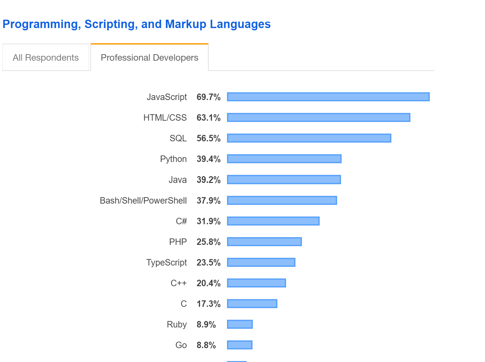

Programowanie obiektowe i wzorce projektowe
Agenda
Programowanie obiektowe
TypeScript
Wzorce projektowe
Programowanie Obiektowe
To proste:
- Klasa
- pola
- metody
- Obiekt
A PIE
- Abstraction - Abstrakcja
- Polimorphism - Polimorfizm
- Inheritance - Dziedziczenie
- Encapsulation - Hermetyzacja
Hermetyzacja
- Ukrywamy implementację
- Tylko metody obiektu mogą zmieniać jego stan
- Obiekt definiuje interfejsem dopuszczalne metody interakcji
Abstrakcja
- Obiekt/Klasa reprezentuje wykonawcę
- Obiekt/Klasa realizuje czynności bez konieczności ujawniania implementacji
Dziedziczenie
- Umożliwia grupowanie obiektów według cech wspólnych
- Klasy mogą wywodzić się z innych, bardziej ogólnych klas
- Klasy dziedziczące z klas nadrzędnych dziedziczą ich metody
Polimorfizm
- Wiele (poly) form (morph)
- W zależności od klasy, ta sama metoda może mieć inny efekt
SOLID - 5 zasad OOP
- Single Responsibility
- Open-Closed
- Liskov Substitution
- Interface Segregation
- Dependency Inversion
Single Responsibility
- Zasada pojedynczej odpowiedzialności
- Powinien istnieć tylko jeden powód do modyfikacji klasy
- Klasa powinna odpowiadać za tylko jedną funkcjonalność
Open-Closed
- Zasada otwarte-zamknięte
- Klasa powinna być otwarta na rozszerzenie, ale zamknięta na modyfikacje
Liskov Substitution
- Zasada podstawienia Liskov
- Podklasa musi być zamienna z klasą nadrzędną
- Kod działający poprawnie z klasą nadrzędną, powinien działać poprawnie z klasą dziedziczącą
Interface Segregation
- Interfejsy powinny byś rozdzielone
- Klasa nie powinna musieć implementować rzeczy, których nie potrzebuje
- Lepiej, gdy kod ma wiele mniejszych interfejsów, niż jeden wielki
Dependency Inversion
- Wysokopoziomowe moduły nie powinny zależeć od modułów niskopoziomowych
- Piszemy na abstrakcjach, nie na konkretnych implementacjach

TypeScript - historia
- Zaprezentowany w 2012
- Stworzony przez Microsoft
- Open Source
TypeScript - nadzbiór javaScript
- Umożliwia (opcjonalne) statyczne typowanie
- Działa z kodem napisanym w czystym .js
- Musi być kompilowany do postaci .js przy użyciu dostarczanego kompilatora
Stackoverflow 2019 Developer Survey
Wzorce Projektowe
- Singleton
- Adapter
- Obserwator
- Fabryka
- Dependency Injection
- Budowniczy
Czym jest wzorzec projektowy?
- Design Patterns - banda czworga
- Ogólny szablon - NIE dokładny algorytm!
- Sprawdzone rozwiązanie częstego problemu projektowego
Podział wzorców ze względu na rodzaje:
- Konstrukcyjne - pomagają w abstrakcji procesu tworzenia klas i obiektów
- Strukturalne - pomagają składać klasy i obiekty w większe lub inne struktury
- Operacyjne - pomagają z podziałem zadań między klasami i obiektami
Singleton
Singleton

Singleton

Adapter
Adapter = Przejściówka
Adapter

Obserwator
Obserwator

Obserwator

Obserwator

Obserwator

Fabryka
Fabryka

Fabryka

Fabryka

Fabryka

Dependency injection
Dependency injection
- moduły niskopoziomowe nie są zależne od wysokopoziomowych
- abstrakcja nie zależy od implementacji
- implementacja jest zależna od abstrakcji
Dependency injection
class StoreService
{
public function getStoreCoordinates($store) {
$geolocationService = new GoogleMaps();
return $geolocationService
->getCoordinatesFromAddress(
$store->getAddress()
);
}
}
Dependency injection
class StoreService {
private $geolocationService;
public function __construct(GeolocationService $geolocationService) {
$this->geolocationService = $geolocationService;
}
public function getStoreCoordinates($store) {
return $this->geolocationService
->getCoordinatesFromAddress(
$store->getAddress()
);
}
}